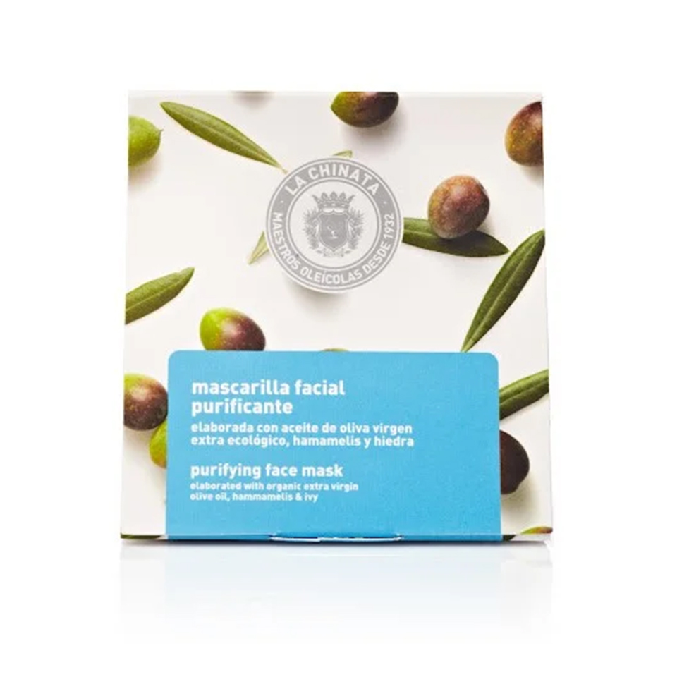

Cosmetic Made in Spain
聯繫我們
產品展示
La chinata净化面膜

33 Kr Content: 8x50ml
La Chinata净化面膜以富含盐分和微量元素的泥浆为基料，使肌肤保湿柔软。它还含有净化和抗脂溢性活性成分，可以清洁，清新和减少面部皮肤充血，保湿，使其光滑，没有杂质。 净化面膜是完美的暗沉皮肤，需要光泽和加强每周清洁的皮肤。这消除了杂质和皮脂分离得到控制。 面具强化了一个特定的动作，并有立即的效果。因此，选择合适的面膜是很重要的，因为它会根据你的具体需求进行调整;我们需要的口罩类型可能取决于天气、我们所从事的活动、阳光照射……因此，我们有各种各样的口罩;提升、活化、滋养、保湿的效果，同时净化肌肤，使肌肤焕发光彩。 正确的使用方法是，在面部皮肤上涂上一层薄薄的防晒霜，并保持10到15分钟。然后用温水冲洗，直到整个产品从我们的脸上去除。建议每周至少使用一次。 为了全面的治疗，在敷完面膜后，建议使用Antiox面部再生精华液，然后使用我们的La Chinata保湿面霜。
Vida Copyright © 2024 All rights reserved